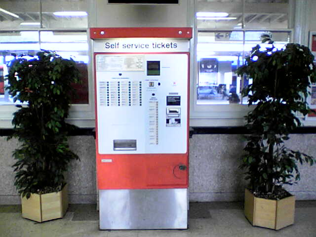
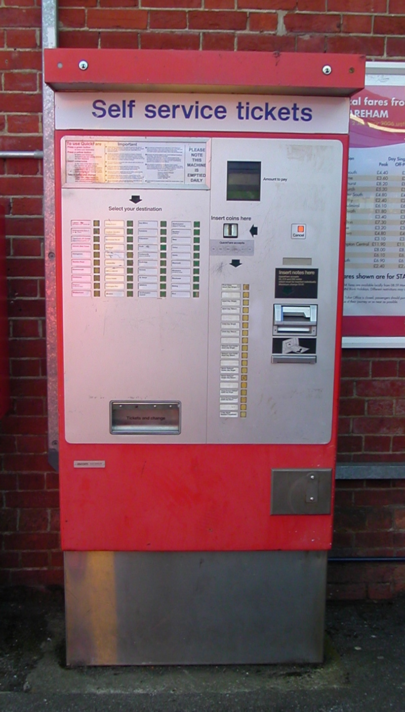

Ascom B8050 QuickFare
A self-service ticket machine whose output is a notched cardstock card that IS the data

Overview
The Ascom B8050 "QuickFare" is a self-service ticket issuing machine deployed on British Rail and across Europe for unstaffed or lightly-staffed stations in the late 1980s. The passenger selects a destination and ticket type by pressing labeled buttons, feeds coins, and the machine issues a ticket printed on a continuous cardstock roll, cut to length.
The defining feature is that the ticket carries its fare data as physical notches punched along the card — no magnetic stripe, no onboard printer computing a stored barcode that a reader later queries. The information that fare inspectors and gates need is encoded directly into the shape of the card itself. The interaction is a compact physical transaction: the machine is a vending machine whose notched card slip is simultaneously a receipt, a data medium, and a credential.
This makes it an odd and satisfying counterpoint in the museum's physical-token-as-data lineage. The Cauzin Softstrip stores data as printed bars on paper; the TI Magic Wand reads printed barcodes; the iButton and Rainbow Sentinel hold identity in a chip. The QuickFare instead folds the data into the physical dimensions of the issued object — the ticket is cut and notched so that the fare it represents is literally legible in its geometry.
Deep dive
The QuickFare ticket is a continuous-roll card, cut to a length that encodes the journey and punched with notches representing the fare. It requires no magnetic reader at the issuing machine at all — the physical card carries the information. The notching-and-cutting mechanism is the interface's output, turning value into a discrete, physical object the passenger holds.
QuickFare brought unstaffed stations into the self-service era. It is the museum's kiosk-side counterpoint to the IBM 3614 ATM and the retail terminals: where those present a screen and keypad for an on-screen transaction, the QuickFare reduces the whole interaction to destination buttons, coin slot, and the emergence of a punched card.
Media
